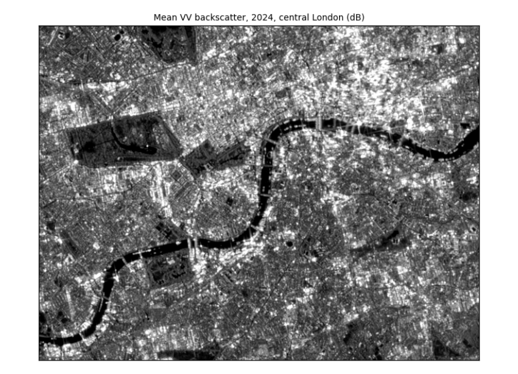

2. Radar basics¶
Before reading any image, it helps to know what a radar measures and why the numbers are in decibels. This chapter then opens the first image and shows why every average must be taken in linear units.
2.1 What a radar image measures¶
Sentinel-1 is a radar satellite. It sends pulses of microwaves (wavelength about 5.5 cm) sideways and down at the ground and measures how much energy comes back. Because it brings its own illumination, it sees through cloud and at night: that is why it is used for floods, which come with cloud.
What comes back depends on the surface. A smooth surface, such as calm water or a runway, acts like a mirror and sends the pulse away from the satellite: it looks dark. A rough surface, such as a field, scatters energy in all directions, some of it back: medium. Buildings form corners with the ground that send energy straight back: bright. The quantity measured is the backscatter coefficient, σ⁰ (sigma-nought), the share of energy returned per unit area. It spans a huge range, from about 0.001 for calm water to above 10 for a building corner, so it is given in decibels (dB):
Every 10 dB is a factor of ten, every 3 dB roughly a factor of two. Negative dB values are normal: they mean less than the reference, not negative energy.
for lin in [0.001, 0.01, 0.1, 0.5, 1, 2, 10]:
print(f"linear {lin:7.3f} -> {10 * np.log10(lin):+6.1f} dB")
linear 0.001 -> -30.0 dB
linear 0.010 -> -20.0 dB
linear 0.100 -> -10.0 dB
linear 0.500 -> -3.0 dB
linear 1.000 -> +0.0 dB
linear 2.000 -> +3.0 dB
linear 10.000 -> +10.0 dB
2.2 Open a radar image¶
A GeoTIFF holds a grid of numbers (one or more bands) and the information that places it on the Earth: the coordinate reference system (CRS) and the transform, which gives the coordinates of the top-left corner and the size of a pixel. Here: the mean VV backscatter (in dB) of all Sentinel-1 scenes of 2024 over central London, at 10 m.
with rasterio.open(DATA / "london_mean_vv_10m.tif") as src:
vv = src.read(1)
print("bands:", src.count, "| rows x columns:", src.shape, "| CRS:", src.crs, "| pixel size:", src.res, "m")
print("left, bottom, right, top:", [round(v) for v in src.bounds])
london_transform, london_crs = src.transform, src.crs
print(f"values (dB): min {np.nanmin(vv):.1f}, 2nd percentile {np.nanpercentile(vv, 2):.1f}, median {np.nanmedian(vv):.1f}, "
f"98th percentile {np.nanpercentile(vv, 98):.1f}, max {np.nanmax(vv):.1f}")
def show(img, ax, title, lo=2, hi=98, cmap="gray"):
"""Display with a percentile stretch: the darkest 2% black, the brightest 2% white, the rest in between."""
a, b = np.nanpercentile(img, [lo, hi])
ax.imshow(img, cmap=cmap, vmin=a, vmax=b)
ax.set_title(title, fontsize=9); ax.set_xticks([]); ax.set_yticks([])
fig, ax = plt.subplots(figsize=(7, 5.3))
show(vv, ax, "Mean VV backscatter, 2024, central London (dB)")
plt.tight_layout(); plt.show()
bands: 1 | rows x columns: (806, 1062) | CRS: EPSG:27700 | pixel size: (10.0, 10.0) m
left, bottom, right, top: [524950, 174980, 535570, 183040]
values (dB): min -19.3, 2nd percentile -13.3, median -4.4, 98th percentile 9.8, max 37.2

How to read the image. Each pixel is 10 m × 10 m. Grey level is backscatter: dark is low (smooth surfaces), light is high. The values were stretched so the darkest 2% are black and the brightest 2% white; without the stretch a few very bright corners would make the rest look uniformly dark. You can now read London as radar sees it: the Thames is a dark band winding across the middle (smooth water); parks such as Hyde Park are mid-grey (grass and trees); the City and Canary Wharf are the brightest areas (building corners); reservoirs in the west are dark patches.
2.3 Averaging: always in linear units¶
Because dB is a logarithm, the average of dB values is not the dB of the average. Two pixels at −30 dB (water) and 0 dB (a bright roof): their mean in dB is −15 dB. In linear units they are 0.001 and 1, whose mean is 0.5005, or −3 dB. The dB mean is too dark by 12 dB, a factor of about 16. Every average (over time, over an area, when making pixels bigger) must be taken in linear units and converted back.
pair = np.array([-30.0, 0.0])
print(f"mean of dB values: {pair.mean():.1f} dB; mean in linear units: {10 * np.log10(np.mean(10 ** (pair / 10))):.1f} dB")
whole_db = np.nanmean(vv)
whole_lin = 10 * np.log10(np.nanmean(10 ** (vv / 10)))
print(f"whole London image: mean of dB values {whole_db:.2f} dB, mean in linear units {whole_lin:.2f} dB, "
f"difference {whole_lin - whole_db:.2f} dB")
mean of dB values: -15.0 dB; mean in linear units: -3.0 dB
whole London image: mean of dB values -3.53 dB, mean in linear units 1.72 dB, difference 5.25 dB
Over the whole image the difference is a few dB: the dB mean is biased low because it gives too little weight to the bright pixels. That is large compared with the differences we want to detect, such as a field turning to floodwater.